Visita virtual
Descubre algunas de las experiencias que te esperan en el Parque Restauración Puntra. Hemos seleccionado imágenes de nuestras propuestas para que puedas imaginar cómo será tu vida junto al río y rodeado de naturaleza.
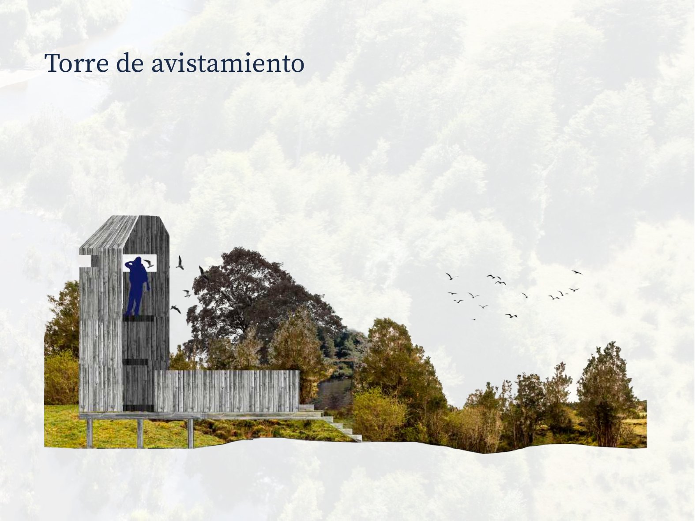
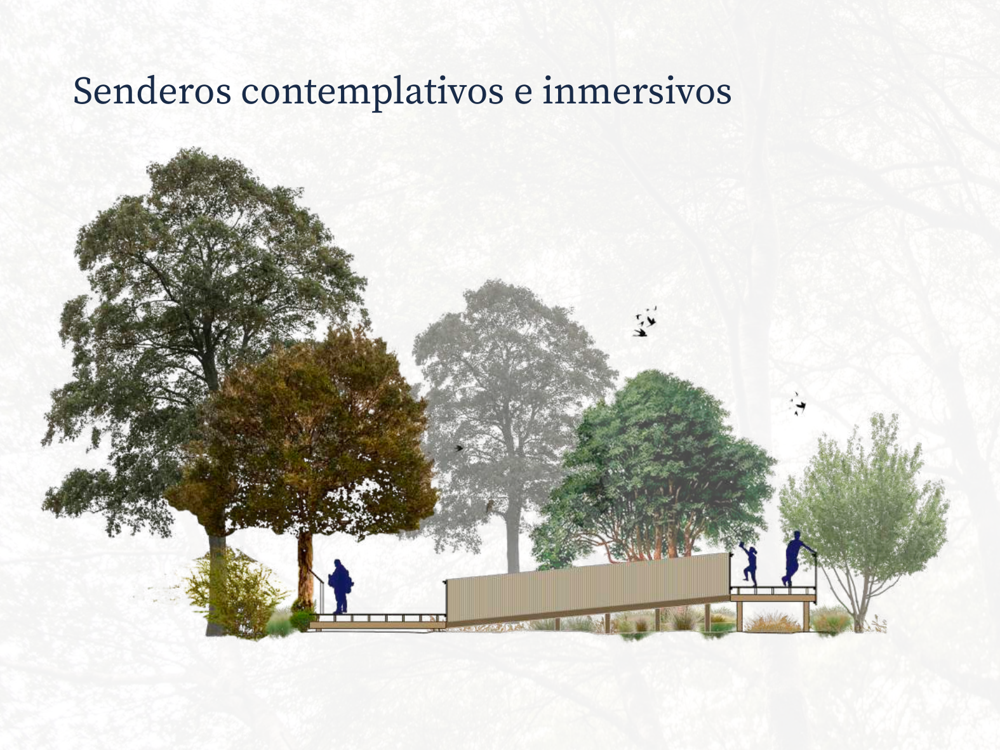
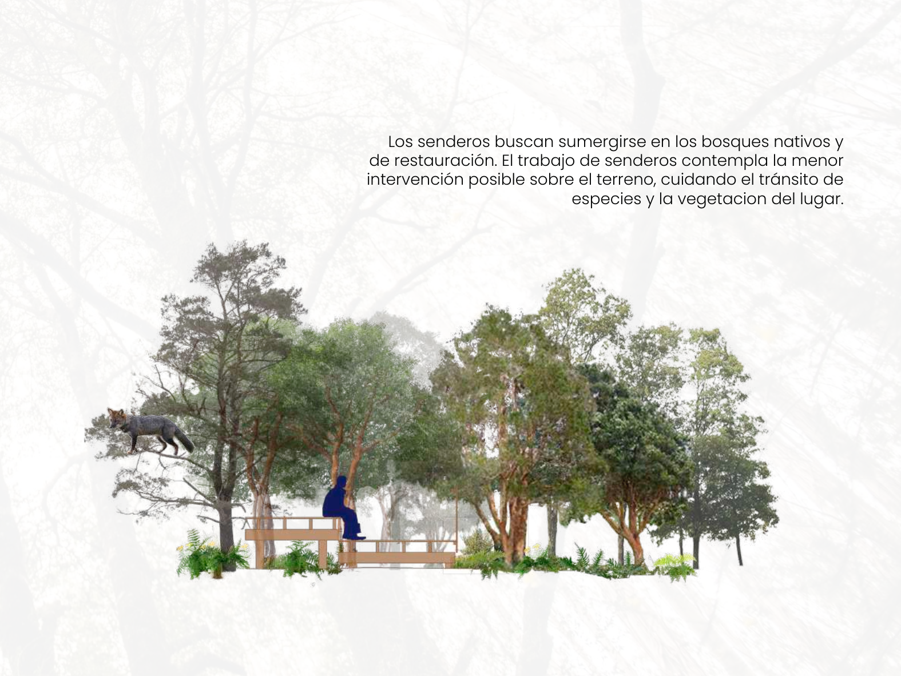
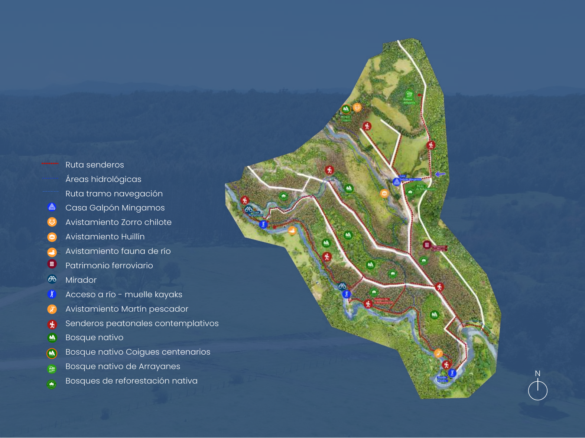
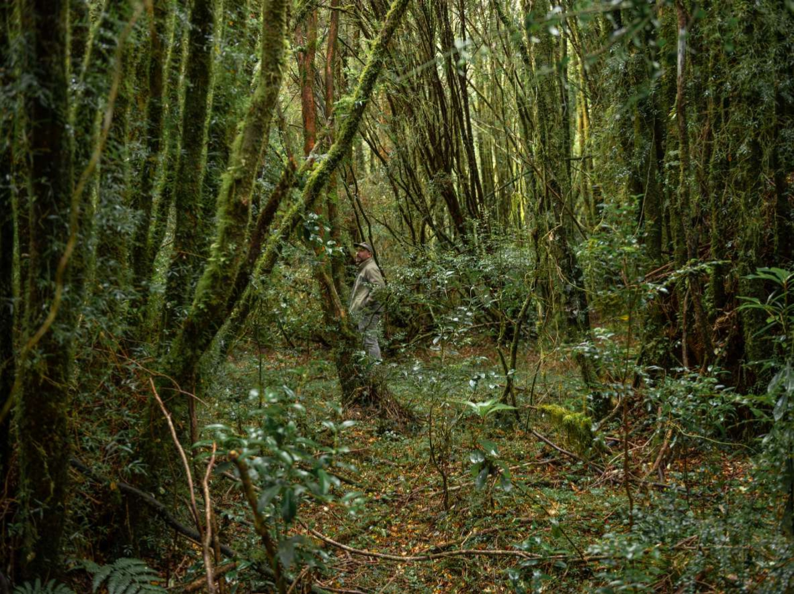
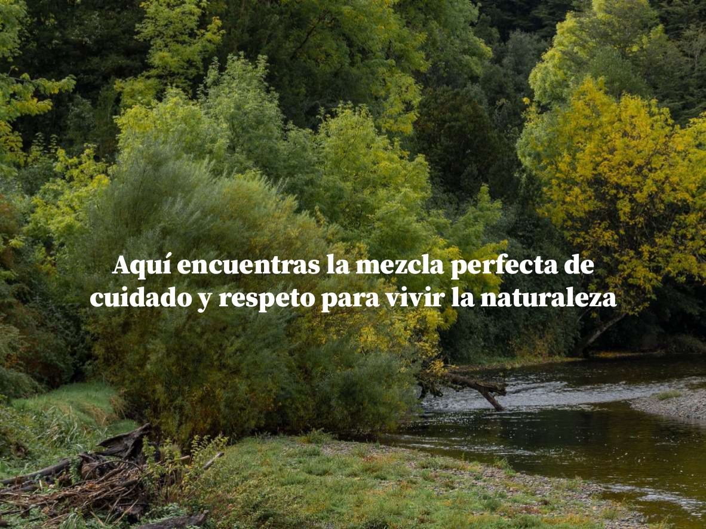
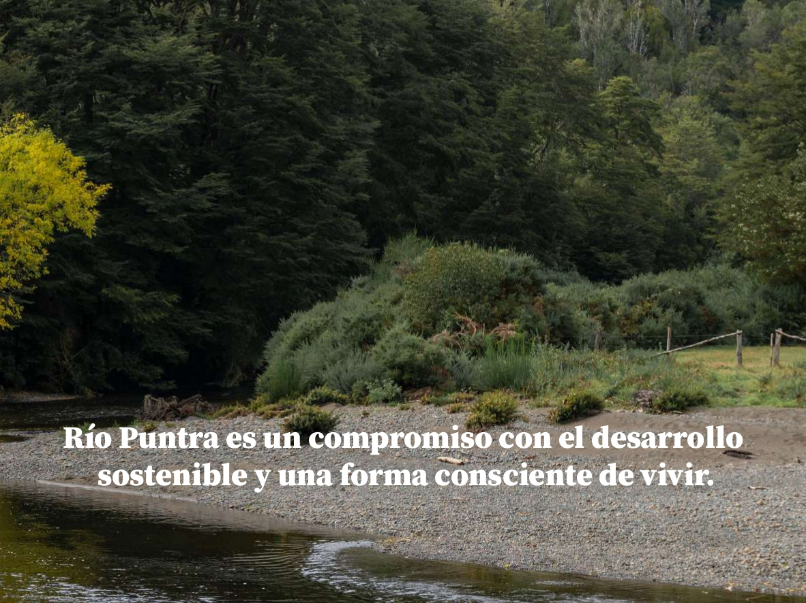
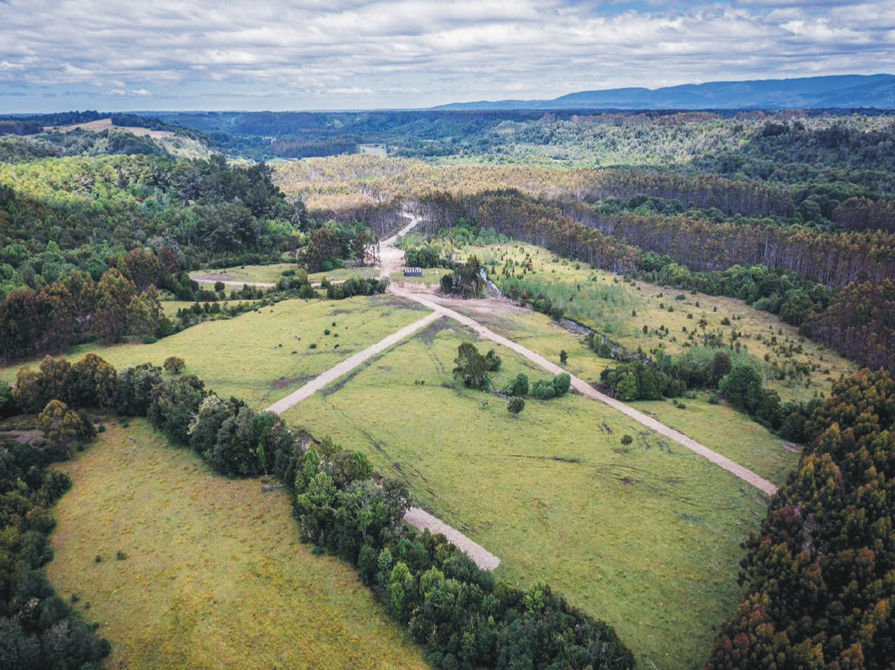
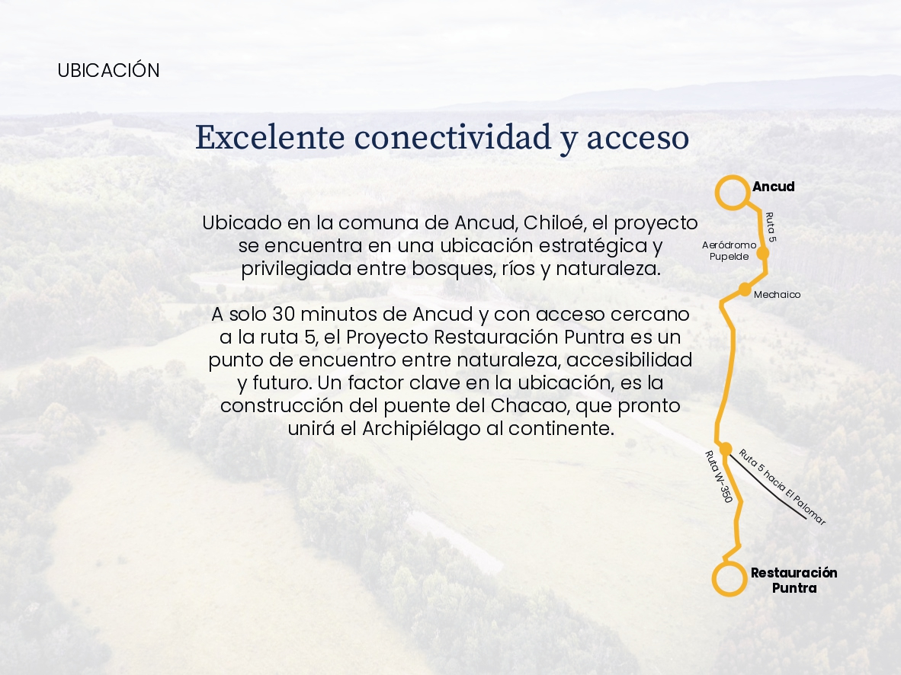
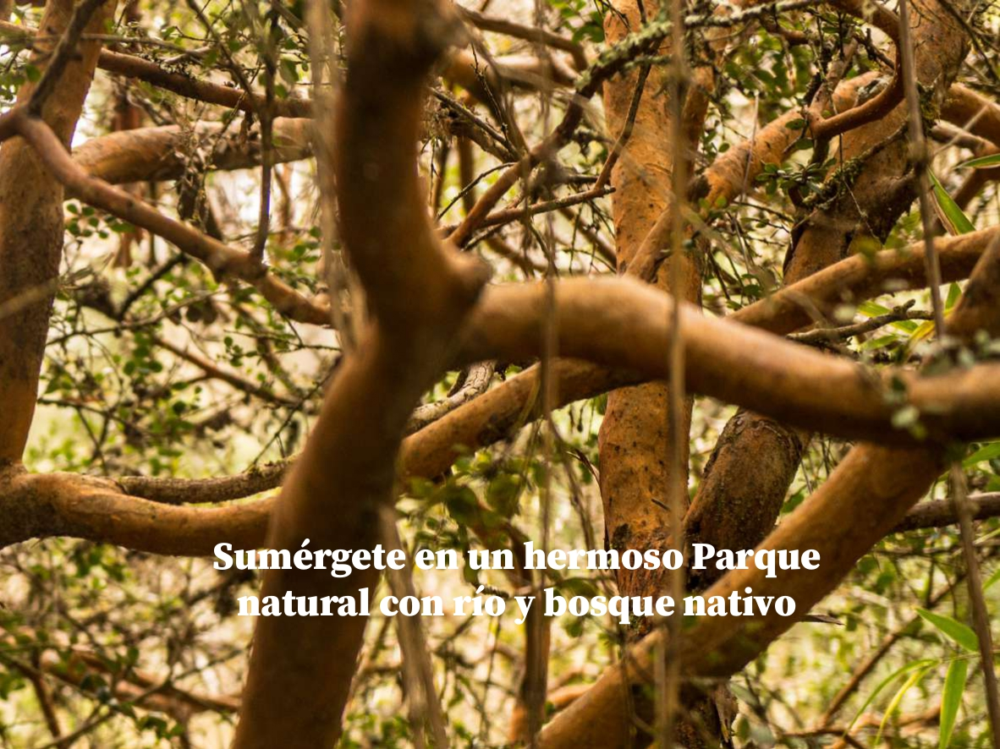
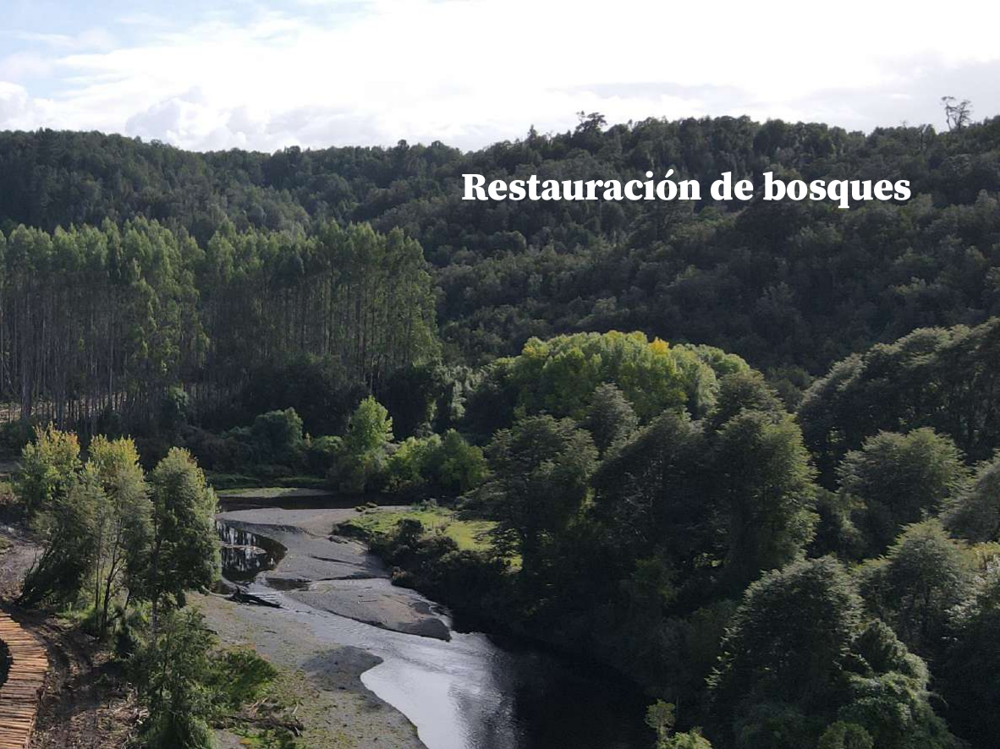
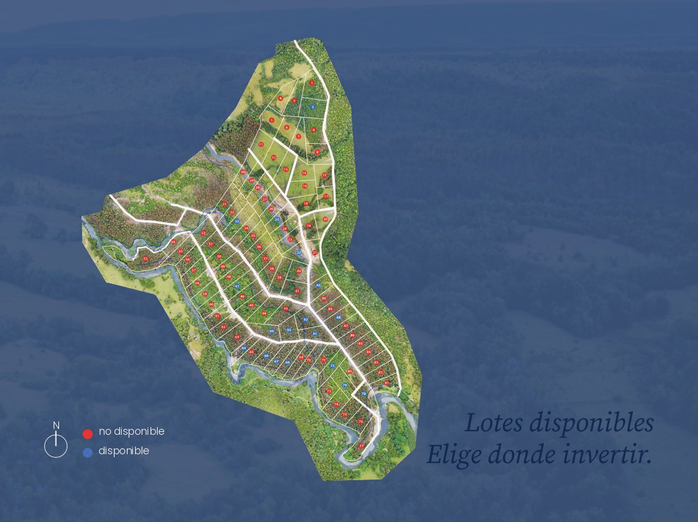